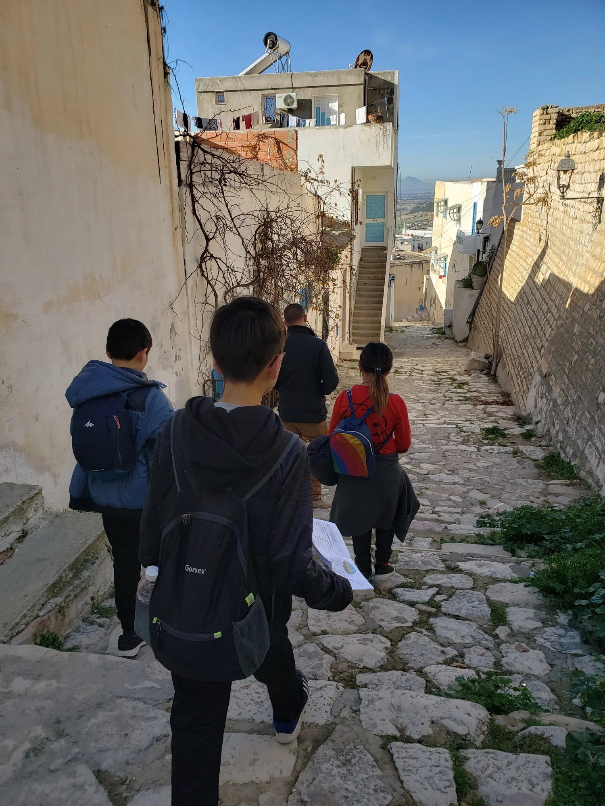

REGISTER NOW FOR SPRING 2026 VISION SCHOOL!
🇺🇸 Youth Vision School (US) registration link:
https://intercpyouth.churchcenter.com/registrations/events/3304948
🇨🇦 Youth Vision School (Canada) registration link:
https://intercpyouth.churchcenter.com/registrations/events/3304952
YVS is an 9-week missions training program consisting of worship, lectures, prayer, and small groups. YVS aims to educate students about the current global mission condition, plant God’s vision of global evangelization, and equip them to be missionaries in the unreached areas of the world. Through YVS, the students will understand the Father’s heart for all nations and adopt God’s vision as their own to live for the kingdom of God.
YVS is a requirement to participate in Field Operation 2 to 3-week mission trip) and High School Student Missions (2-month mission trip).
“And those who are wise shall shine like the brightness of the sky above; and those who turn many to righteousness, like the stars forever and ever.” (Daniel 12:3)
UBTJ is a global youth mission prayer movement; members worship, pray, and evangelize in their middle schools and high schools. The hope for UBTJ is to bring prayer and worship revival upon the youth generation in North America and in all nations. Currently, there are UBTJ in several countries, including Korea, Australia, Japan, and India. Through UBTJ, God is uniting the global youth with the heart to preach the gospel to the unreached nations!
Every winter, there is a 3 to 5-day outreach program called MA:RCH, during which youth from North America unite with other youth in their regions to see their generation rise up for mission revival. MA:RCH is mainly composed of city ministry, school ministry, and vision nights intended to both evangelize to non-believers and awaken believers to God’s global vision to see all the nations worship Jesus Christ.
HSM is a 2-month long summer mission trip to a county in the 10/40 Window. In teams led by adult supervisors, youth go out to partake in frontier ministry in the unreached nations. Through training in the Word, worship, prayer, and evangelism, HSM prepares youth to be spiritual leaders that will stir up gospel revival in the nations!
For more information, email us at northamerica@intercp.org.
